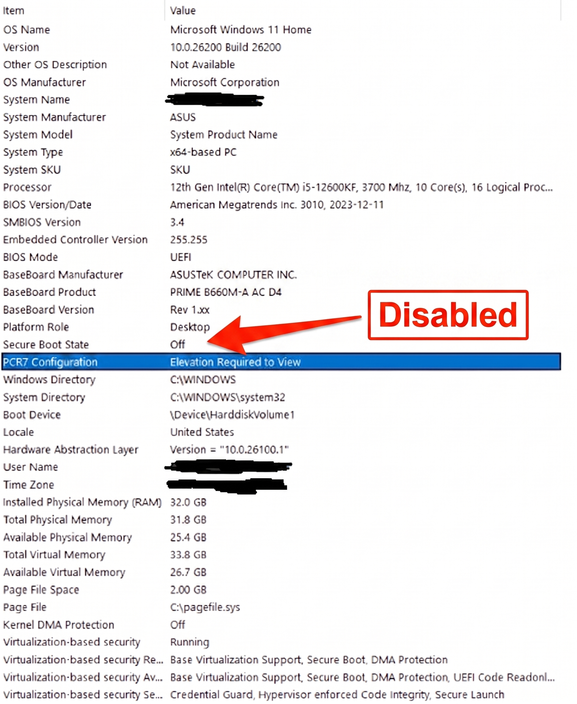

01
Extract the Folder
Download the latest Temp Woof package. Right-click the compressed file and extract all contents to a dedicated folder on your Desktop or C: drive.
Follow this step-by-step procedure to clean game traces, spoof hardware identifiers, and prepare your system.
Download the latest Temp Woof package. Right-click the compressed file and extract all contents to a dedicated folder on your Desktop or C: drive.
Make sure you have the official Visual C++ 2015-2022 x64 redistributables installed on your computer:
https://aka.ms/vs/17/release/vc_redist.x64.exe
Right-click the application executable and select "Run as administrator".
Wait for the console to finish checking for updates. Once the update check is complete, paste your license key when prompted and press Enter.
Select the Clean option corresponding to your Game. The tool will purge leftover anticheat cache and tracking registries.
Once the cleaner has finished all procedures, Restart your PC so Windows applies all registry changes and resets system state.
After rebooting, run the tool as Administrator again, navigate to Woof, and click woof for your Game.
Once the spoofing process reports completion, launch your Game and you are good to play!
This happens when Secure Boot is enabled in your BIOS/UEFI, which blocks custom kernel driver mapping.
How to check your Secure Boot state:
1. Press Win + R on your keyboard, type msinfo32, and press Enter.
2. Look for Secure Boot State in the System Information summary.

If it says "On", reboot into your BIOS/UEFI settings and turn Secure Boot to Disabled.
If the spoofer fails to load or error out, your system has Driver Isolation (Memory Integrity) or Vulnerable Driver Blocklist turned on.
Open Windows Security > Device security > Core isolation details:


Make sure Memory integrity and Microsoft Vulnerable Driver Blocklist are toggled OFF, then restart your PC.
To prevent Windows Defender from closing or blocking the files, follow these steps to turn off Real-time protection:
Settings > Privacy & security > Windows Security > Virus & threat protection > Virus & threat protection settings (Manage settings) > Toggle Real-time protection OFF